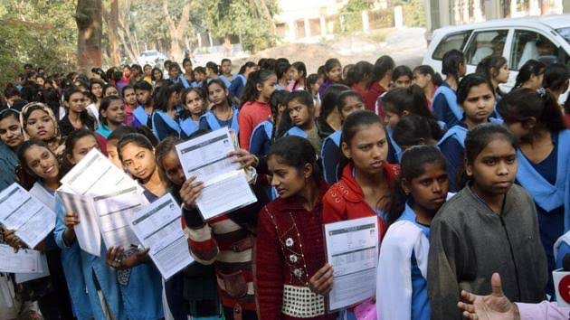

Youth in the 21st century face numerous challenges, including social media and technology issues like cyberbullying and digital addiction, educational and employment difficulties like skills mismatch and job insecurity, and mental health problems. In addition, they grapple with issues like lack of employment opportunities, failure to succeed in education, materialism, loneliness, and anxiety about not measuring up.
Specific Challenges:
Social Media and Technology:
Cyberbullying and digital addiction are significant concerns, impacting mental health and well-being.
Education and Employment:

Skills mismatch, lack of job opportunities, and job insecurity are major challenges, hindering future prospects.
Mental Health:
Anxiety, depression, and suicidal ideation are on the rise, with many youth struggling to access adequate mental health support.
Social Pressures:
Peer pressure, bullying, and lack of mentoring can negatively impact self-esteem and social development.
Lack of Opportunities:
Limited access to quality education, participation in decision-making processes, and opportunities for personal and professional growth can hinder youth development.
Economic Challenges:
Poverty, unemployment, and lack of economic security can create barriers to education, healthcare, and overall well-being.
Substance Use:
Drug and alcohol abuse, often influenced by peer pressure, can lead to addiction and negative health outcomes.
Mental Health Stigma:
The stigma associated with mental health issues can prevent youth from seeking help, exacerbating mental health problems.
Family Dynamics:
Parental pressure, rigid family systems, and social taboos can limit youth's aspirations and choices.
Social Isolation:
Loneliness and feelings of not belonging can contribute to mental health issues and difficulties in navigating social relationships.
Solutions and Interventions
Promoting Mental Health Awareness:
Educating youth and families about mental health, reducing stigma, and providing access to mental health resources are crucial.
Improving Education and Skills Training:
Focusing on practical learning, teacher training, and equal access to education can equip youth with the skills needed for employment.
Creating Job Opportunities:
Job creation, technical training programs, and infrastructure improvements can help address unemployment and promote economic opportunities.
Addressing Social Media and Technology Issues:
Raising Awareness
Raising awareness about cyberbullying, digital addiction, and promoting healthy online habits can help mitigate negative impacts.
Strengthening Family Support:
Promoting open communication, reducing parental pressure, and providing guidance on navigating social pressures can support youth's well-being.
Empowering Youth:
Providing opportunities for participation in decision-making processes and encouraging youth leadership can empower them to shape their own futures.
Addressing Economic Disparities:
Investing in social safety nets, poverty reduction programs, and economic development initiatives can create a more equitable environment for youth.
Promoting Substance Abuse Prevention:
Education, awareness campaigns, and access to rehabilitation support can help address substance abuse issues.
By addressing these challenges and implementing comprehensive solutions, society can create a more supportive and empowering environment for youth to thrive.